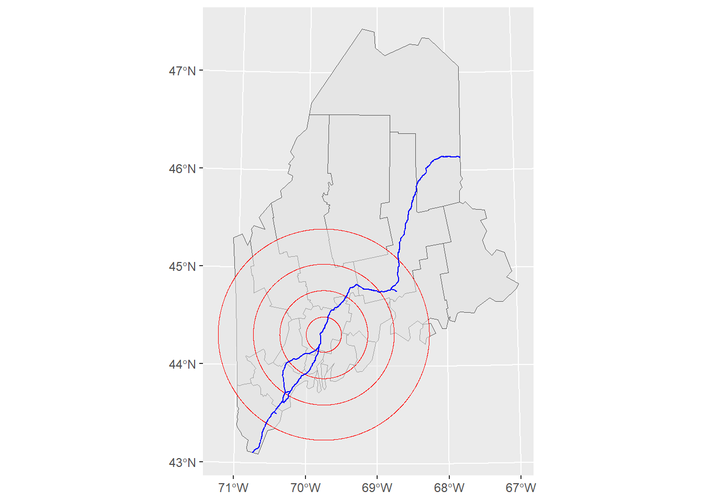
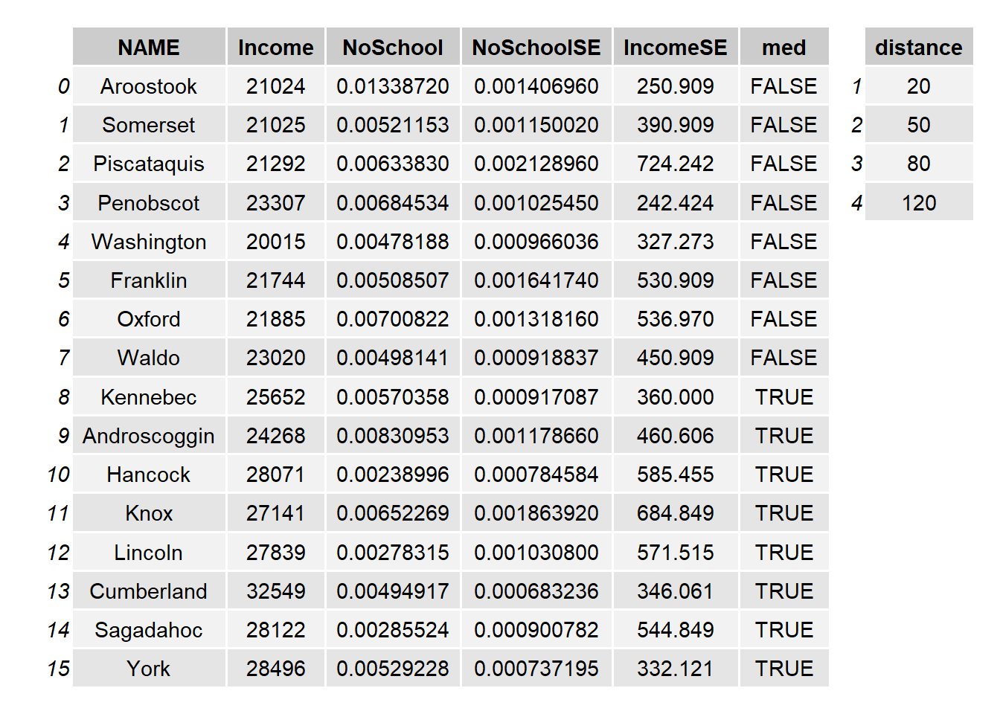
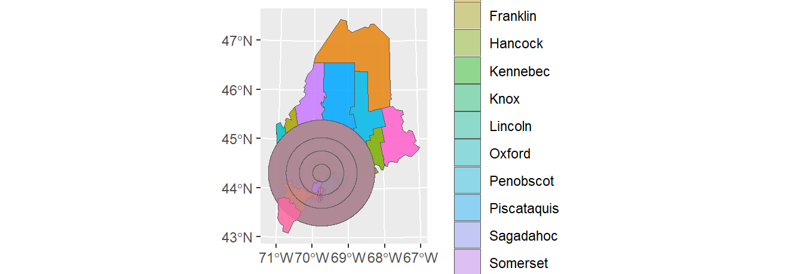
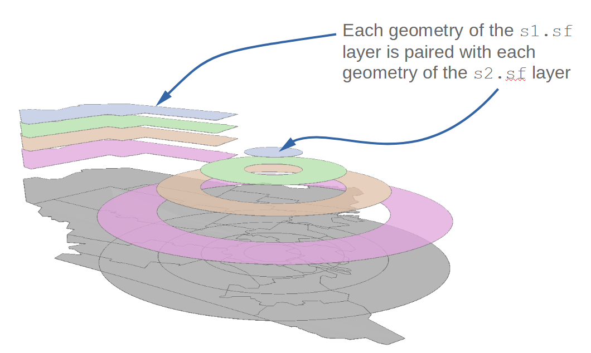
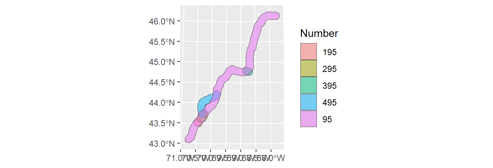

| R | sf | ggplot2 |
| 4.6.1 | 1.1.1 | 4.0.3 |
4 Vector operations in R
Earlier versions of this tutorial made use of a combination of packages including raster and rgeos to perform most vector operations highlighted in this exercise. Many of these vector operations can now be performed using the sf package. As such, all code chunks in this tutorial make use sf for most vector operations.
We’ll first load spatial objects used in this exercise. These include: A polygon layer that delineates Maine counties (USA), s1.sf; A polygon layer that delineates distances to Augusta (Maine) as concentric circles, s2.sf; A polyline layer of the interstate highway system that runs through Maine. These data are stored as sf objects.
library(sf)
z <- gzcon(url("https://github.com/mgimond/spatial_appendix/raw/main/Data/Income_schooling_sf.rds"))
s1.sf <- readRDS(z)
z <- gzcon(url("https://github.com/mgimond/spatial_appendix/raw/main/Data/Dist_sf.rds"))
s2.sf <- readRDS(z)
z <- gzcon(url("https://github.com/mgimond/spatial_appendix/raw/main/Data/Highway_sf.rds"))
l1.sf <- readRDS(z)A map of the above layers is shown below. We’ll use the ggplot2 package too generate this and subsequent maps in this tutorial.
library(ggplot2)
ggplot() +
geom_sf(data = s1.sf) +
geom_sf(data = s2.sf, alpha = 0.5, col = "red") +
geom_sf(data = l1.sf, col = "blue")
The attributes table for both polygon objects (s1.sf and s2.sf) are shown next. Note that each shape object has a unique set of attributes as well as a unique number of records

s1.sf, (left table) and the distance to Augusta spatial object, s2.sf (right table).Dissolving geometries
Dissolving by contiguous shape
There are two different ways to dissolve geometries that share a common boundary. Both are presented next.
Option 1
To dissolve all polygons that share at least one line segment, simply pass the object name to sf’s st_union function while making sure that the by_feature option is set to FALSE. In this example, we dissolve all polygons to create a single outline of the state of Maine.
ME <- st_union(s1.sf, by_feature = FALSE)
ggplot(ME) + geom_sf(fill = "grey")Note that the dissolving process removed all attributes from the original spatial object. You’ll also note that st_union returns an sfc object even though the input object is sf. You can convert the output to an sf object using the st_sf() function as in st_sf(ME).
Option 2
Another approach is to make use of the dplyr package and its group_by/summarise functions.
library(dplyr)
ME <- s1.sf %>%
group_by() %>%
summarise()
ggplot(ME) + geom_sf(fill = "grey")
Note that this option will also remove any attributes associated with the input spatial object, however, the output remains an sf object (this differs from the st_union output).
Dissolving by attribute
You can also choose to dissolve based on an attribute’s values. First, we’ll create a new column whose value will be binary (TRUE/FALSE) depending on whether or not the county income is below the counties’ median income value.
s1.sf$med <- s1.sf$Income > median(s1.sf$Income)
ggplot(s1.sf) + geom_sf(aes(fill = med))Next, we’ll dissolve all polygons by the med attribute. Any polygons sharing at least one line segment that have the same med value will be dissolved into a single polygon.
Two approaches are presented here: one using sf’s aggregate function, the other using the dplyr approach adopted in the previous section.
Option 1
ME.inc <- aggregate(s1.sf["med"], by = list(diss = s1.sf$med),
FUN = function(x)x[1], do_union = TRUE)This option will create a new field defined in the by = parameter (diss in this working example).
st_drop_geometry(ME.inc) # Print the layer's attributes table diss med
1 FALSE FALSE
2 TRUE TRUEOption 2
ME.inc <- s1.sf %>%
group_by(med) %>%
summarise() This option will limit the attributes to that/those listed in the group_by function.
st_drop_geometry(ME.inc)# A tibble: 2 × 1
med
* <lgl>
1 FALSE
2 TRUE A map of the resulting layer follows.
ggplot(ME.inc) + geom_sf(aes(fill = med))The dissolving (aggregating) operation will, by default, eliminate all other attribute values. If you wish to summarize other attribute values along with the attribute used for dissolving, use the dplyr piping operation option. For example, to compute the median Income value for each of the below/above median income groups type the following:
ME.inc <- s1.sf %>%
group_by(med) %>%
summarize(medinc = median(Income))
ggplot(ME.inc) + geom_sf(aes(fill = medinc))To view the attributes table with both the aggregate variable, med, and the median income variable, Income, type:
st_drop_geometry(ME.inc)# A tibble: 2 × 2
med medinc
* <lgl> <dbl>
1 FALSE 21518
2 TRUE 27955Subsetting by attribute
You can use conventional R dataframe manipulation operations to subset by attribute values. For example, to subset by county name (e.g. Kennebec county), type:
ME.ken <- s1.sf[s1.sf$NAME == "Kennebec",]You can, of course, use piping operations to perform the same task as follows:
ME.ken <- s1.sf %>%
filter(NAME == "Kennebec")ggplot(ME.ken) + geom_sf()To subset by a range of attribute values (e.g. subset by income values that are less than the median value), type:
ME.inc2 <- s1.sf %>%
filter(Income < median(Income))
ggplot(ME.inc2) + geom_sf()Intersecting layers
To intersect two polygon objects, use sf’s st_intersection function.
clp1 <- st_intersection(s1.sf, s2.sf)
ggplot(clp1) + geom_sf()st_intersection keeps all features that overlap along with their combined attributes. Note that new polygons are created which will increase the size of the attributes table beyond the size of the combined input attributes table.
st_drop_geometry(clp1) NAME Income NoSchool NoSchoolSE IncomeSE med distance
8 Kennebec 25652 0.00570358 0.000917087 360.000 TRUE 20
12 Lincoln 27839 0.00278315 0.001030800 571.515 TRUE 20
14 Sagadahoc 28122 0.00285524 0.000900782 544.849 TRUE 20
1 Somerset 21025 0.00521153 0.001150020 390.909 FALSE 50
5 Franklin 21744 0.00508507 0.001641740 530.909 FALSE 50
6 Oxford 21885 0.00700822 0.001318160 536.970 FALSE 50
7 Waldo 23020 0.00498141 0.000918837 450.909 FALSE 50
8.1 Kennebec 25652 0.00570358 0.000917087 360.000 TRUE 50
9 Androscoggin 24268 0.00830953 0.001178660 460.606 TRUE 50
11 Knox 27141 0.00652269 0.001863920 684.849 TRUE 50
12.1 Lincoln 27839 0.00278315 0.001030800 571.515 TRUE 50
13 Cumberland 32549 0.00494917 0.000683236 346.061 TRUE 50
14.1 Sagadahoc 28122 0.00285524 0.000900782 544.849 TRUE 50
1.1 Somerset 21025 0.00521153 0.001150020 390.909 FALSE 80
2 Piscataquis 21292 0.00633830 0.002128960 724.242 FALSE 80
3 Penobscot 23307 0.00684534 0.001025450 242.424 FALSE 80
5.1 Franklin 21744 0.00508507 0.001641740 530.909 FALSE 80
6.1 Oxford 21885 0.00700822 0.001318160 536.970 FALSE 80
7.1 Waldo 23020 0.00498141 0.000918837 450.909 FALSE 80
9.1 Androscoggin 24268 0.00830953 0.001178660 460.606 TRUE 80
10 Hancock 28071 0.00238996 0.000784584 585.455 TRUE 80
11.1 Knox 27141 0.00652269 0.001863920 684.849 TRUE 80
12.2 Lincoln 27839 0.00278315 0.001030800 571.515 TRUE 80
13.1 Cumberland 32549 0.00494917 0.000683236 346.061 TRUE 80
14.2 Sagadahoc 28122 0.00285524 0.000900782 544.849 TRUE 80
1.2 Somerset 21025 0.00521153 0.001150020 390.909 FALSE 120
2.1 Piscataquis 21292 0.00633830 0.002128960 724.242 FALSE 120
3.1 Penobscot 23307 0.00684534 0.001025450 242.424 FALSE 120
5.2 Franklin 21744 0.00508507 0.001641740 530.909 FALSE 120
6.2 Oxford 21885 0.00700822 0.001318160 536.970 FALSE 120
7.2 Waldo 23020 0.00498141 0.000918837 450.909 FALSE 120
10.1 Hancock 28071 0.00238996 0.000784584 585.455 TRUE 120
13.2 Cumberland 32549 0.00494917 0.000683236 346.061 TRUE 120
15 York 28496 0.00529228 0.000737195 332.121 TRUE 120Clipping spatial objects using other spatial objects
The st_intersection can also be used to clip an input layer using another layer’s outer geometry boundaries as the “cookie cutter”. But note that the latter must be limited to its outer boundaries which may require that it be run through a dissolving operation (shown earlier in this tutorial) to dissolve internal boundaries.
To clip s2.sf using the outline of s1.sf, type:
clp2 <- st_intersection(s2.sf, st_union(s1.sf))
ggplot(clp2) + geom_sf()The order the layers are passed to the st_intersection function matters. Flipping the input layer in the last example will clip s1.sf to s2.sf’s bounding polygon(s).
clp2 <- st_intersection(s1.sf, st_union(s2.sf))
ggplot(clp2) + geom_sf()Line geometries can also be clipped to polygon features. The output will be a line object that falls within the polygons of the input polygon object. For example, to output all line segments that fall within the concentric distance circles of s2.sf, type:
clp3 <- st_intersection(l1.sf, st_union(s2.sf))A plot of the clipped line features is shown with the outline of the clipping feature.
ggplot(clp3) +
geom_sf(data = clp3) +
geom_sf(data = st_union(s2.sf), col = "red", fill = NA )Unioning layers
To union two polygon objects, use sf’s st_union function. For example,
un1 <- st_union(s2.sf,s1.sf)
ggplot(un1) + geom_sf(aes(fill = NAME), alpha = 0.4)
This produces the following attributes table.
distance NAME Income NoSchool NoSchoolSE IncomeSE med
1 20 Aroostook 21024 0.01338720 0.001406960 250.909 FALSE
2 50 Aroostook 21024 0.01338720 0.001406960 250.909 FALSE
3 80 Aroostook 21024 0.01338720 0.001406960 250.909 FALSE
4 120 Aroostook 21024 0.01338720 0.001406960 250.909 FALSE
1.1 20 Somerset 21025 0.00521153 0.001150020 390.909 FALSE
2.1 50 Somerset 21025 0.00521153 0.001150020 390.909 FALSE
3.1 80 Somerset 21025 0.00521153 0.001150020 390.909 FALSE
4.1 120 Somerset 21025 0.00521153 0.001150020 390.909 FALSE
1.2 20 Piscataquis 21292 0.00633830 0.002128960 724.242 FALSE
2.2 50 Piscataquis 21292 0.00633830 0.002128960 724.242 FALSE
3.2 80 Piscataquis 21292 0.00633830 0.002128960 724.242 FALSE
4.2 120 Piscataquis 21292 0.00633830 0.002128960 724.242 FALSE
1.3 20 Penobscot 23307 0.00684534 0.001025450 242.424 FALSE
2.3 50 Penobscot 23307 0.00684534 0.001025450 242.424 FALSE
3.3 80 Penobscot 23307 0.00684534 0.001025450 242.424 FALSE
4.3 120 Penobscot 23307 0.00684534 0.001025450 242.424 FALSE
1.4 20 Washington 20015 0.00478188 0.000966036 327.273 FALSE
2.4 50 Washington 20015 0.00478188 0.000966036 327.273 FALSE
3.4 80 Washington 20015 0.00478188 0.000966036 327.273 FALSE
4.4 120 Washington 20015 0.00478188 0.000966036 327.273 FALSE
1.5 20 Franklin 21744 0.00508507 0.001641740 530.909 FALSE
2.5 50 Franklin 21744 0.00508507 0.001641740 530.909 FALSE
3.5 80 Franklin 21744 0.00508507 0.001641740 530.909 FALSE
4.5 120 Franklin 21744 0.00508507 0.001641740 530.909 FALSE
1.6 20 Oxford 21885 0.00700822 0.001318160 536.970 FALSE
2.6 50 Oxford 21885 0.00700822 0.001318160 536.970 FALSE
3.6 80 Oxford 21885 0.00700822 0.001318160 536.970 FALSE
4.6 120 Oxford 21885 0.00700822 0.001318160 536.970 FALSE
1.7 20 Waldo 23020 0.00498141 0.000918837 450.909 FALSE
2.7 50 Waldo 23020 0.00498141 0.000918837 450.909 FALSE
3.7 80 Waldo 23020 0.00498141 0.000918837 450.909 FALSE
4.7 120 Waldo 23020 0.00498141 0.000918837 450.909 FALSE
1.8 20 Kennebec 25652 0.00570358 0.000917087 360.000 TRUE
2.8 50 Kennebec 25652 0.00570358 0.000917087 360.000 TRUE
3.8 80 Kennebec 25652 0.00570358 0.000917087 360.000 TRUE
4.8 120 Kennebec 25652 0.00570358 0.000917087 360.000 TRUE
1.9 20 Androscoggin 24268 0.00830953 0.001178660 460.606 TRUE
2.9 50 Androscoggin 24268 0.00830953 0.001178660 460.606 TRUE
3.9 80 Androscoggin 24268 0.00830953 0.001178660 460.606 TRUE
4.9 120 Androscoggin 24268 0.00830953 0.001178660 460.606 TRUE
1.10 20 Hancock 28071 0.00238996 0.000784584 585.455 TRUE
2.10 50 Hancock 28071 0.00238996 0.000784584 585.455 TRUE
3.10 80 Hancock 28071 0.00238996 0.000784584 585.455 TRUE
4.10 120 Hancock 28071 0.00238996 0.000784584 585.455 TRUE
1.11 20 Knox 27141 0.00652269 0.001863920 684.849 TRUE
2.11 50 Knox 27141 0.00652269 0.001863920 684.849 TRUE
3.11 80 Knox 27141 0.00652269 0.001863920 684.849 TRUE
4.11 120 Knox 27141 0.00652269 0.001863920 684.849 TRUE
1.12 20 Lincoln 27839 0.00278315 0.001030800 571.515 TRUE
2.12 50 Lincoln 27839 0.00278315 0.001030800 571.515 TRUE
3.12 80 Lincoln 27839 0.00278315 0.001030800 571.515 TRUE
4.12 120 Lincoln 27839 0.00278315 0.001030800 571.515 TRUE
1.13 20 Cumberland 32549 0.00494917 0.000683236 346.061 TRUE
2.13 50 Cumberland 32549 0.00494917 0.000683236 346.061 TRUE
3.13 80 Cumberland 32549 0.00494917 0.000683236 346.061 TRUE
4.13 120 Cumberland 32549 0.00494917 0.000683236 346.061 TRUE
1.14 20 Sagadahoc 28122 0.00285524 0.000900782 544.849 TRUE
2.14 50 Sagadahoc 28122 0.00285524 0.000900782 544.849 TRUE
3.14 80 Sagadahoc 28122 0.00285524 0.000900782 544.849 TRUE
4.14 120 Sagadahoc 28122 0.00285524 0.000900782 544.849 TRUE
1.15 20 York 28496 0.00529228 0.000737195 332.121 TRUE
2.15 50 York 28496 0.00529228 0.000737195 332.121 TRUE
3.15 80 York 28496 0.00529228 0.000737195 332.121 TRUE
4.15 120 York 28496 0.00529228 0.000737195 332.121 TRUENote that the union operation can generate many overlapping geometries. This is because each geometry of the layers being unioned are paired up with one another creating unique combinations of each layer’s geometries.

For example, the Aroostook County polygon from s1.sf is paired with each annulus of the s2.sf layer creating four new geometries.
un1 %>% filter(NAME == "Aroostook")Simple feature collection with 4 features and 7 fields
Geometry type: MULTIPOLYGON
Dimension: XY
Bounding box: xmin: 318980.1 ymin: 4788093 xmax: 596500.1 ymax: 5255569
Projected CRS: +proj=utm +zone=19 +datum=NAD83 +units=m +no_defs +ellps=GRS80 +towgs84=0,0,0
distance NAME Income NoSchool NoSchoolSE IncomeSE med
1 20 Aroostook 21024 0.0133872 0.00140696 250.909 FALSE
2 50 Aroostook 21024 0.0133872 0.00140696 250.909 FALSE
3 80 Aroostook 21024 0.0133872 0.00140696 250.909 FALSE
4 120 Aroostook 21024 0.0133872 0.00140696 250.909 FALSE
geometry
1 MULTIPOLYGON (((438980 4928...
2 MULTIPOLYGON (((438980 4958...
3 MULTIPOLYGON (((438980 4988...
4 MULTIPOLYGON (((438980 5028...The union operation creates all possible pairs of geometries between both input objects (i.e. 4 circle geometries from s2.sf times 16 county geometries from s1.sf for a total of 64 geometries).
Buffering geometries
To buffer point, line or polygon geometries, use sf’s st_buffer function. For example, the following code chunk generates a 10 km (10,000 m) buffer around the polyline segments.
l1.sf.buf <- st_buffer(l1.sf, dist = 10000)
ggplot(l1.sf.buf) + geom_sf() + coord_sf(ndiscr = 1000)To create a continuous polygon geometry (i.e. to eliminate overlapping buffers), we’ll follow up with one of the dissolving techniques introduced earlier in this tutorial.
l1.sf.buf.dis <- l1.sf.buf %>%
group_by() %>%
summarise()
ggplot(l1.sf.buf.dis) + geom_sf() If you want to preserve an attribute value (such as highway number), modify the above code as follows:
l1.sf.buf.dis <- l1.sf.buf %>%
group_by(Number) %>%
summarise()
ggplot(l1.sf.buf.dis, aes(fill=Number) ) + geom_sf(alpha = 0.5)